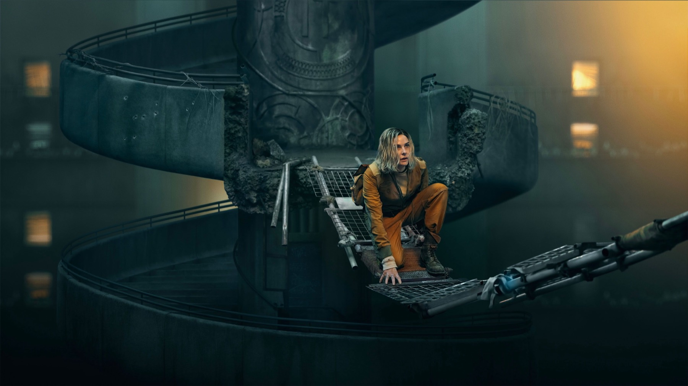

Silo – Stagione 3
Memoria, origini e Washington: la stagione più ambiziosa di Silo rallenta per scavare a fondo, e prepara il gran finale
Per due stagioni ci siamo chiesti chi avesse costruito il silo, e perché. Con la terza, Apple TV ha deciso finalmente di rispondere, e lo ha fatto nel modo più spiazzante possibile: portandoci fuori dalla terra, in superficie, centinaia di anni prima, nei corridoi del potere di Washington. Dieci episodi, dal 3 luglio al 4 settembre, che hanno trasformato la serie con Rebecca Ferguson in qualcosa di più grande e di più rischioso. Ora che la stagione è conclusa possiamo tirare le somme: e il bilancio, come per buona parte della critica, è decisamente positivo, con qualche riserva.
I numeri parlano chiaro: a ottobre 2026 Rotten Tomatoes le assegna il 96% di recensioni positive, con un giudizio riassuntivo che la definisce una distopia magistrale. Ma dietro la media si nasconde un dibattito interessante, soprattutto sul ritmo.
Di cosa parla la terza stagione?
Un breve ripasso per chi arriva adesso. Silo racconta una comunità di circa diecimila persone che vive sottoterra, in un enorme silo di 144 piani, convinta che la superficie sia diventata tossica e invivibile. Le regole sono rigide, la storia del passato è proibita e chi chiede di uscire viene mandato fuori a morire. Juliette, ingegnera dei livelli più bassi, ha passato le prime due stagioni a scoprire che quasi tutto ciò che le era stato insegnato era una menzogna. È proprio quella scoperta il motore che la terza stagione raccoglie e rilancia.
Senza spoiler: la stagione adatta Shift, il secondo romanzo della trilogia di Hugh Howey, e procede su due binari. Nel presente ritroviamo Juliette Nichols, l'ingegnera interpretata da Ferguson, che si risveglia senza memoria e deve ricostruire chi è e da che parte stare. Nel passato seguiamo il deputato Daniel Keene (Ashley Zukerman) e la giornalista investigativa Helen Drew (Jessica Henwick), alle prese con una cospirazione che, episodio dopo episodio, svela le origini dei silos.
Nel cast tornano Tim Robbins, Common e Alexandria Riley, mentre tra le new entry spiccano Laura Innes nei panni della senatrice Rosalind Thurman, Reed Birney e Jessica Brown Findlay. Alla guida c'è sempre lo showrunner Graham Yost, già creatore di Justified.

Perché funziona
La scelta dell'amnesia è, come scrive Tania Hussain su Collider, un punto di partenza brillante: ci costringe a riguardare con occhi nuovi un mondo che credevamo di conoscere, proprio come fa la protagonista. Ferguson lavora per sottrazione, con una determinazione silenziosa che rende credibile il suo smarrimento senza mai spegnere l'istinto di Juliette a mettere in dubbio l'autorità.
La linea di Washington è la grande novità e convince quasi tutti. Collider parla di un'alchimia immediata tra Zukerman e Henwick e loda il contrasto visivo tra la precisione clinica della capitale e l'estetica industriale e sporca del silo. Beatrice Pagan su BadTaste la considera una delle narrazioni di fantascienza più interessanti delle ultime stagioni televisive e sottolinea il peso della fotografia nel costruire la claustrofobia del silo.
Il merito più grande, però, è un altro: finalmente arrivano le risposte. Il Cineocchio, pur severo, riconosce che la serie smette di accumulare misteri all'infinito, come faceva Lost, e comincia a dare spiegazioni concrete. E le due linee si tengono grazie a un solo tema, la memoria: chi decide che cosa si può ricordare del passato decide anche chi comanda, nel silo come a Washington.
Prima le domande, ora le risposte: Silo cambia passo e prepara il capitolo finale.
Il problema del ritmo
Se c'è un difetto su cui la critica concorda, è la partenza. Pagan parla di un avvio un po' al rallentatore, che mette alla prova la pazienza, e di personaggi secondari usati in modo superficiale; Gioia Majuna sul Cineocchio, che assegna un 6 su 10, la definisce senza giri di parole una stagione di transizione: i primi episodi investono tutto nella costruzione del nuovo scenario e sacrificano parte della tensione. Per noi è il difetto più concreto della stagione: chi arriva dalla seconda stagione deve aspettare qualche episodio prima di ritrovare la tensione a cui era abituato.
C'è anche un rovescio della medaglia legato alla ricchezza della stagione. Hussain, pur assegnando un 9 su 10, ammette che la quantità di nuovi personaggi e trame può risultare all'inizio un po' travolgente, e Pagan nota che gli amici e gli alleati di Juliette, centrali nelle stagioni precedenti, contano meno. È il prezzo di un racconto che si apre su due epoche: qualcuno, inevitabilmente, resta indietro.
Un finale che vale l'attesa
La pazienza viene ripagata. Anche Majuna riconosce che, superata la fase introduttiva, Silo torna a mostrare tutto il suo potenziale, e per Pagan l'ultima puntata, intitolata Troy, dimostra che ogni tassello sta andando al suo posto. È la sensazione con cui si chiude la stagione: dopo tanta preparazione, il racconto è pronto per l'ultimo capitolo.
Lo stesso giorno della messa in onda del finale, Apple ha annunciato la data della quarta e ultima stagione: arriverà il 9 luglio 2027, completando l'adattamento dei tre romanzi di Howey. Una notizia che conferma la sensazione lasciata da questa terza annata: tutto, adesso, punta verso la conclusione.
Vale la pena vederla?
Sì, soprattutto se avete amato le prime due stagioni. Silo 3 non è la più travolgente, ma è probabilmente la più importante: allarga il mondo, risponde a domande rimaste sospese per anni e lo fa con una cura produttiva che pochissime serie possono permettersi. Il consiglio è di non mollare dopo i primi episodi, più lenti: la seconda metà ripaga ampiamente. E se non avete ancora iniziato, ora è il momento perfetto per recuperare tutto prima del gran finale.
Se da un lato la terza stagione rallenta e qualche episodio di troppo si sente, dall'altro Silo allarga il suo mondo con intelligenza, finalmente risponde ai suoi misteri e chiude rimettendo ogni pezzo al suo posto. Una stagione di passaggio, ma di altissimo livello.
Domande frequenti
Quanti episodi ha la terza stagione di Silo?
Dieci, usciti su Apple TV dal 3 luglio al 4 settembre 2026.
Quando esce la quarta stagione di Silo?
Il 9 luglio 2027. Sarà la stagione finale della serie.
Quale libro adatta Silo 3?
Shift, il secondo romanzo della trilogia di Hugh Howey.
Fonti consultate (9)
- Wikipedia – Silo (TV series)
- Rotten Tomatoes – Silo: Season 3
- Rotten Tomatoes – Silo S3 E10
- Collider – Silo Season 3 review (Tania Hussain)
- BadTaste – Silo 3, la recensione (Beatrice Pagan)
- Il Cineocchio – Recensione Silo 3 (Gioia Majuna)
- Moviestruckers – Silo stagione 3, recensione
- Apple TV Press – Silo fourth and final season
- TVLine – Silo season 4 release date